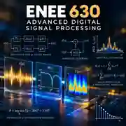

Advanced Digital Signal Processing.
Connect signal models and the frequency domain through guided treatments of transforms, multirate systems, prediction, and spectral analysis.

From idea to intuition.
Every module can combine a clear explanation, a hands-on demonstration, and a walkthrough of the reasoning.
Core concepts
Plain-language explanations, definitions, identities, and underlying assumptions.
FoundationInteractive explorers
Change parameters and see how the mathematics, intermediate states, and algorithms respond.
Interactive examplesReleased walkthroughs
Original guided solutions are published only after official release and permission to share.
Release-gated contentWhat we'll explore.
Planned topic areas. Materials and interactive modules will be added incrementally.
01Multirate signal processingSyllabus pillar · detailed historical figure audit pending
Build intuition about changing sampling rates and implementing analysis/synthesis systems efficiently.
- Sampling-rate conversion: decimation, interpolation, aliasing, spectral images and anti-alias filters
- Efficient implementation: polyphase decomposition and multistage processing
- Filter banks: two-channel and M-channel analysis/synthesis, subband coding and reconstruction
Original independent DSP model; historical multirate lecture figure audit remains pending.
Study objectives and coverage notes02Linear prediction and filteringConfirmed November notes · interactive example available
Investigate how observations, correlation and model assumptions determine optimal linear estimates.
- Linear estimation: mean-square error, covariance matrices and error orthogonality
- Forward/backward prediction: predictor ordering, Toeplitz systems and Levinson–Durbin ideas
- Wiener and Kalman methods: filtering, state-space models and innovations
Example limitation: AR(1) one-sided Markov prediction is not a general ARMA/Toeplitz solver.
03Spectral estimationConfirmed November 11–18 · interactive example available
Compare the resolution, bias, variance and assumptions of finite-record power spectrum estimators.
- Nonparametric estimates: autocorrelation, PSD, periodogram, leakage and tapering
- Variance reduction: independent-block averaging, segment length, bias–variance tradeoffs and multitaper approaches
- Parametric models: AR spectral estimation, model order and mismatch
Source status: November 16/18 class topics confirmed from transcripts; Lecture 20/21 PDF diagrams still await visual inspection.
04Sparsity-aware signal processingSyllabus pillar · scheduled coverage not yet verified
Explore sparse signal representation and reconstruction once actual instruction and mathematical conventions are verified.
- Foundations: sparse representations and sparsity-aware estimation
- Optimization: norm-based formulations and their assumptions
- Algorithms: greedy approaches and iterative methods (tentative syllabus topics)
The Fall 2026 syllabus tentatively schedules this pillar beginning November 23. No claim of completed classroom coverage is made here.
View syllabus-based learning objectivesGo beyond the lesson.
The main learning portal maintains a searchable, categorized directory of mathematics, programming, AI, and academic references.
Math identities, programming documentation, university services, and more.
Course title and scope: UMD course listing. This is an independent project, not an official course website.